A Slopegraph Update
Okay. A forewarning. This follow-up post gets lost in the weeds at several points. I wrote it shortly after my initial slopegraphs piece, but didn't post it for some reason or another. If you haven't read the original piece, I'd encourage you to check it out. It's more interesting, and more polished.
Honestly, I'd prefer for you to think of this follow-up as a very rough draft that I'm publishing simply so it'll be off my plate.
But for those of you looking for more details, examples, and whatnot, here you go.
It’s clear there’s something here.
The response to the original slopegraphs post I published on Monday blew me away. You know how when line charts that zigzag within a range get new data that’s wildly out-of-sync with the existing data, and the chart for the existing data points totally flattens? That’s what happened here.
The post was linked to by Edward Tufte himself, by John Gruber and Jason Kottke, was the #1 post on Hacker News for several hours, was on MetaFilter, and saw a massive amount of activity on Twitter. I’m humbled and amazed by the attention the post has gotten, and excited for what it might do to help slopegraphs see more widespread adoption.
In posting it, I also learned a great deal from a lot of you, and I wanted to write a follow-up, to share that learning with you.
We’re going to look at some charts that are similar to slopegraphs (bumps charts and parallel-coordinate plots), at some new examples of slopegraphs you all have shared with me, at a new possible enhancement to drawing slopegraphs that you might consider, at percentage vs. absolute value comparisons, at more best practices, and at some new software for drawing slopegraphs (and a few old ones that I didn’t know about when I wrote the first piece).
Whew. Let’s get started.
Charts That Are Similar to Slopegraphs
Bumps Charts
Many of you were quick to note the similarity between slopegraphs and “Bumps Charts”.
From the Cambridge University Combined Boat Clubs site:
Side-by-side racing is not possible over a long distance on the narrow and winding River Cam, so the bumps format was introduced in the early 19th century as an exciting alternative.
At the start of the bumping races, crews line up along the river with one and a half boat lengths of clear water between them. On the start signal (the firing of a cannon) they chase each other up the river. When a bump occurs (when one crew is hit by it’s chasing crew), they pull over to allow the other crews to continue racing.
The next day, all crews involved in a bump swap places and the race is run again.
The manner of charting these “bumps” is with a “bumps chart”. It looks like this:
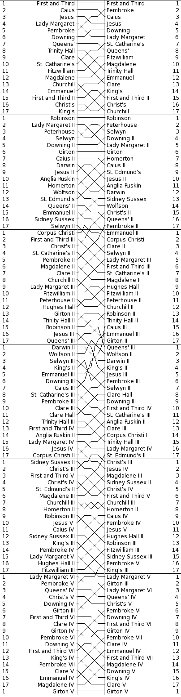http://www.cucbc.org/charts?year=2010&event=M&day=Fi&sex=M(I should note that Tufte mentions bumps charts in Envisioning Information (p. 111).)
The bumps chart reveals the progression of the boats through the series of races. And, because of the forced rankings, the drama and tension of the races is carried through to the chart reader. Just look at the rivalry going on between Churchill III and Homerton II. Or the stunning rise of Caius III. Or poor Girton V.
So are bumps charts slopegraphs? Absolutely. Are slopegraphs bumps charts? Not always. I would draw the Venn circle for bumps charts as completely contained within the larger Venn circle of slopegraphs.
If you’re interested in seeing more bumps charts, and several slopegraphs classified as bumps, Junk Charts has a number of both good and bad examples. Several slopegraphs are at ProcessTrends.com as well.
It should be noted that sometimes, bumps charts can be a little too ambitious:
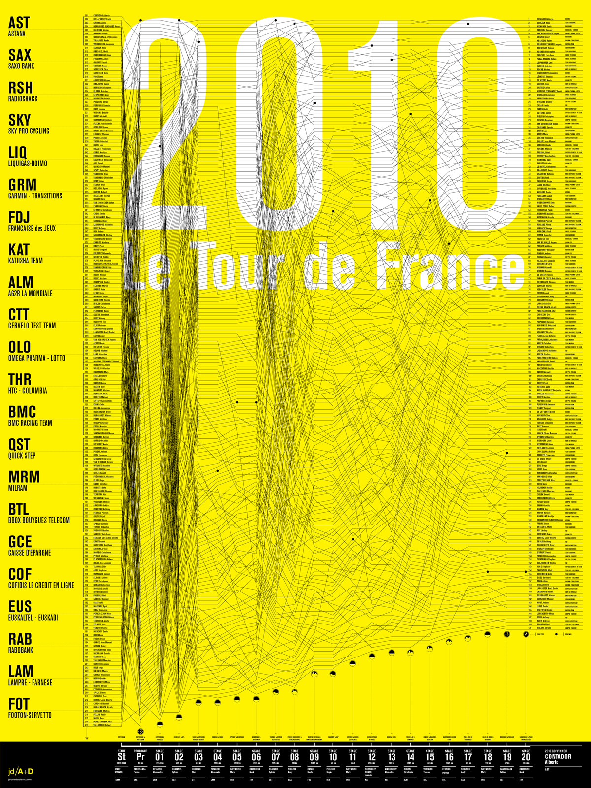http://jeromedaksiewicz.com/images/stories/downloads/TdF/TdF_Standings-001a.jpgIn the examples I gave the other day, we saw two charts (baseball and speed-per-dollar) that could be classified as bumps charts. Interestingly, although, by comparing different things along the two Y-axes, they both had flavors of Maurice d’Ocagne’s / Al Inselberg’s Parallel Coordinate Plots.
Parallel Coordinate Plots
I mentioned these in passing in the post the other day, but wanted to give a little more context on these.
While I won’t go deep on PCPs, they’re basically a means of comparing different items across a range of criteria. The idea is that you have more than one vertical axis, and each vertical axis shows how the item performed according to that specific criterion.
For example, Jon Peltier made this Parallel-Coordinates Plot comparing the performance of baseball players, measuring their on-base, power, base-running, and fielding percentages:
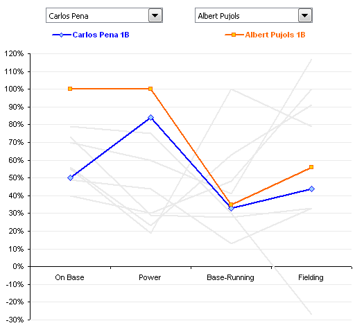http://peltiertech.com/WordPress/composite-baseball-player-evaluation/If you’re new to PCPs, it’s important to note that even though there’s a line present, PCPs aren’t measuring performance over time.
If you want to see a really good example of a parallel-coordinate plot, head over to the Juice Analytics “spike chart” of NFL team performance. In their words, “Our NFL stats ‘spike chart’ is an easy way to see who’s leading the league in passing, rushing, receiving, tackles, team offense, and team defense. By showing key metrics side by side, you get the full picture of a player or team performance–not just the highlights.” It’s a well-done tool. (Although it’s not trying to necessarily draw in the slopes of a normal PCP, which I think is a good thing. See the next paragraph for why.)
So are parallel coordinate plots slopegraphs? Generally, I’d say they aren’t. Why? In most PCPs, the slope across the entire chart carries no meaning. The line is there only to aid your eye in tracking an individual agent’s values across the chart. Switching the order of the columns – and changing their slope – doesn’t change the general outcome of the chart.
Look at the PCP above, comparing baseball performance. If you switched the order of the columns, so the slopes were different, would that change the information the chart carries? Not at all. If the order were “Power, On Base, Fielding, Running”, such that both lines angled downwards as you go from left-to-right, that wouldn’t be any different than if the order were reversed, and the slopes of both had an upward trend across the chart.
I mentioned above that in my original slopegraph piece, the salary-per-dollar and speed-per-dollar charts both had aspects of PCPs. Do I still consider them slopegraphs? Yes and kind of. Both charts are a cross between a PCP and a Bumps Chart. For another example of this PCP/BC cross, check out this interactive chart comparing different countries’ rankings in innovation from GE, designed by Pentagram’s Lisa Strausfeld.
For Ben Fry’s Baseball Chart, there are only two criteria: each team’s win-loss ratio and each team’s budget. As such, you can think of it as “a super-close zoom-in on a parallel-coordinates plot”. In this case, the slope does carry meaning. The gradient matters.
So should I have included the Speed Per Dollar example as a slopegraph? I’ve gone back and forth on this, and I think, ultimately, I should have included it, but I should have noted that rather than being a slopegraph, it’s actually several slopegraphs, pinned together. It’s horsepower vs. weight, and weight vs. price, and price vs. performance.
And now that I think about it, seeing it in that light, it might be even better if it were presented as horsepower divided by weight, to get a “hypothetical speed value”, and then to use that new metric as the value to compare with the price. So you’d have a single slopegraph, of the “speed” (or whatever you’d call that metric) in one column and the “price” in another column. Then, you’d have steeper lines showing better (or worse) values. And once you do all that, you’d have (effectively) the same chart that Ben Fry had, with his win-ratio/budget chart.
As a sidenote on the Speed Per Dollar example, one of you (Kyle Harr) astutely noted in an e-mail to me:
In the WindingRoad graph, all columns are arranged according to descending ‘value’: that is, lower weights and prices are better and therefore appear at the top of the column while higher horsepower is more desirable and also appears at the top of the column.
This does cause certain models to jump rather drastically between columns, adding some clutter, but that’s the point: a car like the Veyron may yield absolute best performance, but in the end, it’s not a very efficient way to get it.
While the WindingRoad graph is substantially more cluttered, the colored and patterned lines do make it relatively straight forward to read. Dave’s design was cleaner in other areas but reordering the columns obscures critical information in my opinion.
I agree: I do still think it was smart of Dave to swap the weight and horsepower columns, but keeping “more horsepower at the top” would probably have been better.
As a final note on PCPs, I just want to say that I’m not a huge fan of them overall. I can see some of their general utility, but I suspect that in many cases where PCPs are used, the data (and the reader) might be better served by chunking the data into multiple charts, each one highlighting certain pieces of information and answering specific questions.
Ladder Graphs
A term that’s occasionally been used for sloped graphs is the “ladder graph”. A ladder graph is actually very close to a slopegraph. Kurt Heisler, of the U.S. Department of Health and Human Services, e-mailed me with info on ladder graphs, and pointing to a few examples. He notes: “A common step in Concept Mapping is to ask participants to take a list of statements and rate them according to their importance, relevance, etc. to the “concept” being studied. The statement ratings are analyzed quantitatively with pattern matching, a process that groups statements into clusters based on similarities on how they were rated. Each cluster, then, has its own average rating. If you want compare how two groups rated each cluster, compare ratings between Time 1 and Time 2, or compare how clusters were rated using two different rating scales, you use a Ladder Graph. Because of the number of data points, you can also measure agreement with correlation statistics.”
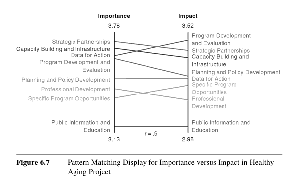Basically, if the group in the left column agrees with the group in the right column about priorities and whatnot, the slopes will all be 0°, and will all line up.
So isn’t a ladder graph just another name for a slopegraph? Not quite.
The key distinction between the two: A ladder graph compares the forced ranking of multiple variables among two groups. A slopegraph, though, would be a good candidate for showing “a progression of univariate data among multiple actors over time”.
Kurt Heisler also pointed out a few more examples of ladder graphs, for those looking to drill a bit deeper:
- Mary Kane and William Trochim’s book Concept Mapping for Planning and Evaluation (citations at Google Books) (2007)
- Page 17 of the academic paper Use of Concept Mapping/Pattern Matching as a Strategic Planning Tool for a Local Congregation, by Darryl Jinkerson (2003)
Some New Slopegraph Examples
Happily, I’ve learned of several other slopegraphs that existed before the post earlier this week. Happily, too, several charts have been developed since then.
Slopegraphs From Before The Article
I’ve tried to include these chronologically.
Graphing Agreement and Disagreement
In 2004 and 2009, Nicholas Cox at the University of Durham wrote “Speaking Stata: Graphing agreement and disagreement” (2004). He also wrote “Speaking Stata: Paired, parallel, or profile plots for changes, correlations, and other comparisons” (2009). Both appeared in The Stata Journal. He includes a number of examples of slopegraphs, and includes some alternative representations for when a chart’s rendering must be done by a computer (for example: avoiding label collision by plotting each item vertically or horizontally, each in its own column, in Tukey-style quasi-whiskerplot).
Infant Mortality
In April of 2009, the New York Times showed a comparison of infant mortality rates from 1960 to 2004:
 http://www.nytimes.com/imagepages/2009/04/06/health/infant_stats.html
http://www.nytimes.com/imagepages/2009/04/06/health/infant_stats.html
A few things to note: They resolve the issue of tie-breaking by having the points converge, and listing the tied countries in order of their original ranking from the left side of the chart. Their labeling could have been made clearer by including the actual rank number next to each rank endpoint on the chart (there’s no way to tell at a glance how many places the US dropped, for example). By including the rank number, it would also eliminate the need for the “Lower infant death rates” and “Higher infant death rates” labels.
Also, in an e-mail from Dr. Michael MacAskill, he notes: “The problem with this example is that it also departs from Tufte’s example by using ranks rather than the actual values. Ranks are unstable when dealing with values with little real variation (such as child mortality rates in developed countries), in this case giving the erroneous impression of a substantial change in US mortality rates.” I’ll discuss this a bit more down below, in the “relative vs. absolute” portion of the more best practices section.
College Tuition and Fees
In September of 2009, Tom Schenk developed this slopegraph, comparing Iowa’s tuition and fee changes with those of surrounding states:
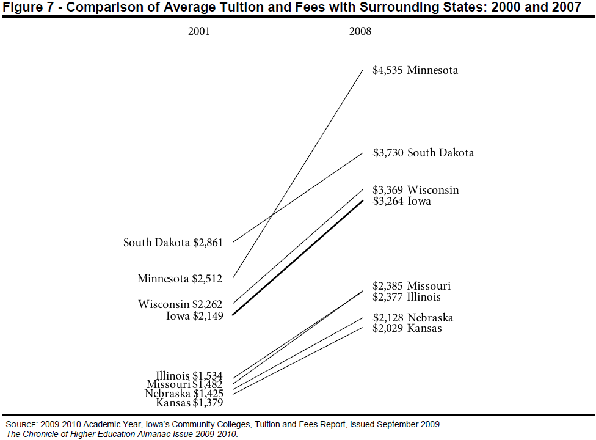http://tomschenkjr.net/2010/11/10/not-everything-is-under-insert-non-traditional-basic-graphs/Jobs in the Netherlands
Also in 2009, while working for the Dutch province of Flevoland, Joshua de Haseth made a slopegraph showing economic data and job growth among different Dutch provinces.
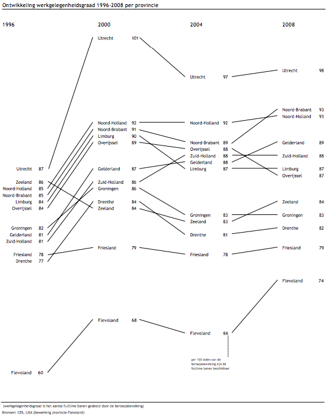He made the chart in Excel, and since he wrote it as “in Excel (!)”, I’m guessing it wasn’t the easiest chart to make. Maybe Microsoft will try to steal the term “slopegraph” as well as sparkline, and this will be a walk in the park in a few years.
Brazilian Prison Population Change
In November of 2010, Brazilian newsweekly Época showed a visualization of the increasing prison population across the country.
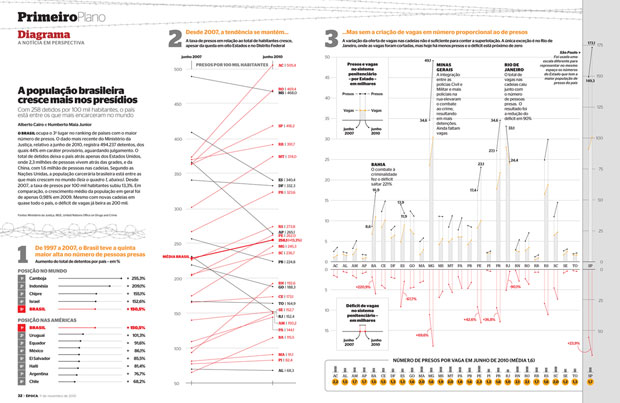http://colunas.epoca.globo.com/fazcaber/2011/03/25/editora-globo-ganha-dois-premios-malofiej/You can see a larger version of this at the Epoca website (click on the large “2” at the top of the chart on that page).
This chart won a Malofiej prize, an international contest described as “the infographics equivalent of the Pulitzer Prizes”, awarded by the Spanish chapter of the Society for News Design
Medicare Adoption
In April of 2011, Brent Jones at the St. Louis Observer created a chart showing Medicare adoption rates in different states. This is more of a PCP/Bumps cross than a slopegraph, but I wanted to link to it here anyway.
The Canadian Power List
Im May of 2010, Grant Hamilton at the Brandon Sun published a quasi-slopegraph/bumps chart looking at a listing of power brokers in the Brandon area of Manitoba. Like the Medicare Adoption link above, I won’t analyze this one too much here, but I wanted to mention it.
The Tablet Effect
On July 11, 2011 …
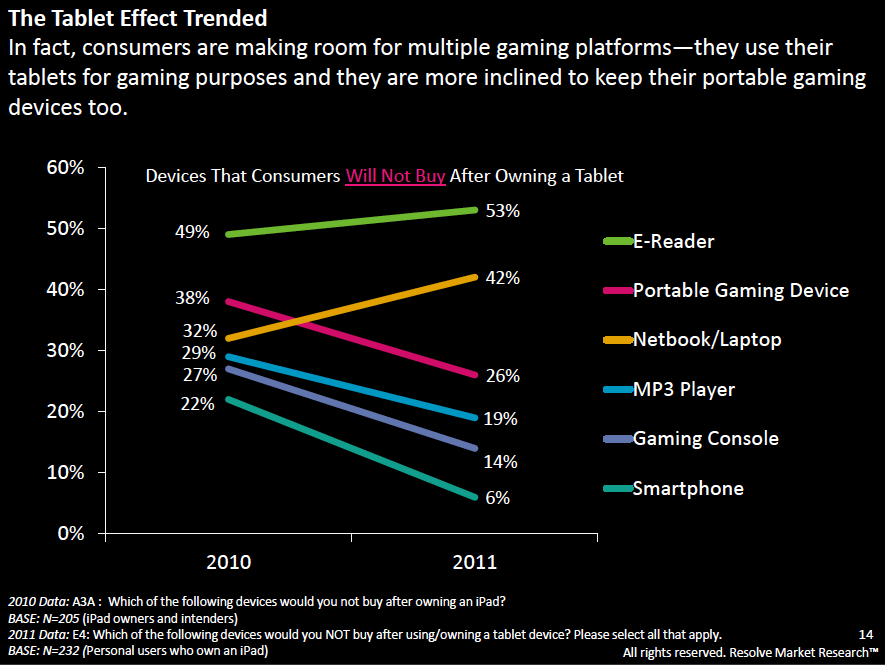http://www.resolvemr.com/Ironically, this one was published online on the same day as my original article. It comes from an industry report created by Resolve Market Research.
I have a few quibbles with this one, but it’s a good example of a slopegraph.
Apart from general eyecandy issues, two specific slopegraph concerns:
- In the chart as it was originally presented, it isn’t clear at a glance whether the textual labels (the %s) are the comparison points, or whether the ends of the lines themselves are the comparison points. (Here, the chart’s been shrunken a bit, but you can see it at its full size by clicking here.) After a second or two, you see that the percentage labels are simply giving a more complete picture of the data, and it’s the lines that carry the dominant data. But because the labels have a higher contrast from the black background than the lines, the eye is drawn to the percentages. One way to handle this would be to make the percentage labels less contrasting from the background, rather than white, so they stand out less.
- Also, the legend should probably disappear altogether, and the names of the different readers could be appended to one (or both) of the percentage labels.
{kind=link}
Slopegraphs Since The Article
Final Cut Pro Price Changes
On July 14th, 2011, Alex Gollner posted this slopegraph comparing price changes of Apple’s Final Cut Pro X:
 http://alex4d.wordpress.com/2011/07/14/fpx-july-2011-price-changes/
http://alex4d.wordpress.com/2011/07/14/fpx-july-2011-price-changes/
Defense Spending
On July 15th, 2011, Gulliver posted slopegraphs of NATO defense spending as a percentage of GDP.
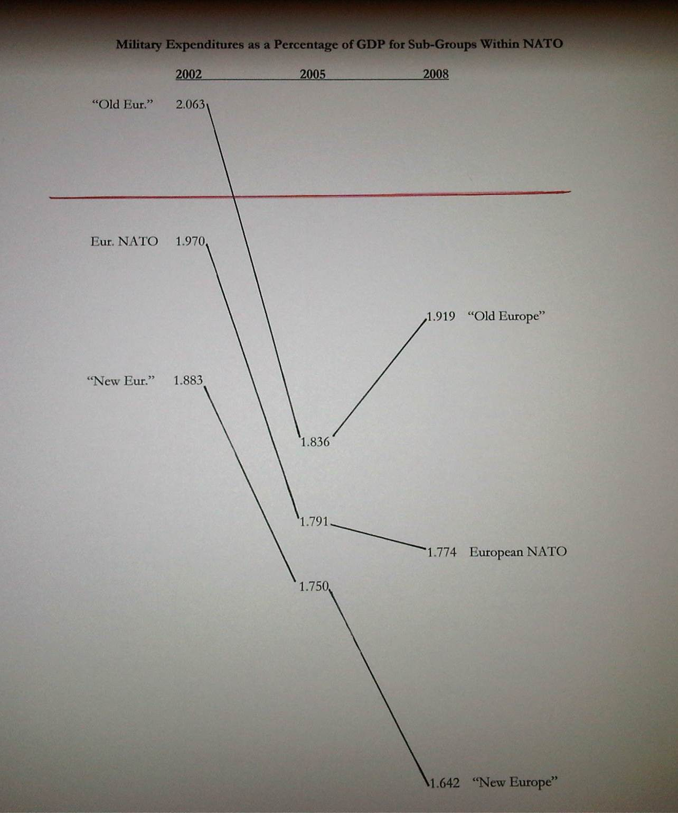http://tachesdhuile.blogspot.com/2011/07/fun-with-slopegraphs-nato-defense.htmlMilitary Expenditure in East Asia
Also on July 15th, 2011, Per Henrik Johansen used David Ruaru’s slopegraphs in R script to create a slopegraph showing military expenditures in 2000 and 2010:
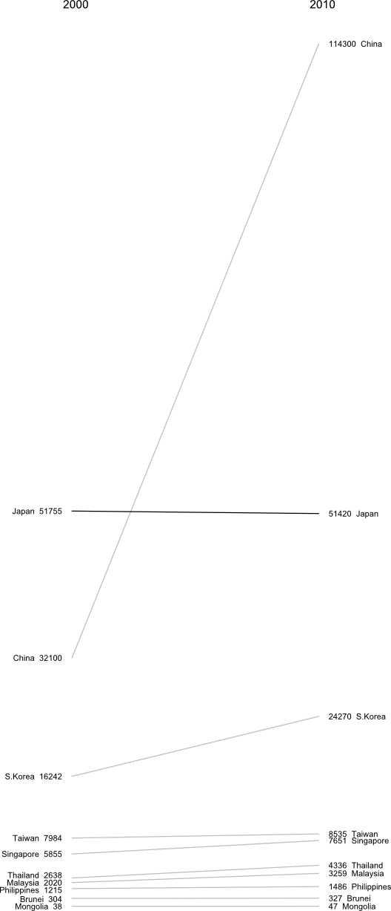http://blog.perhenrik.com/2011/07/military-expenditure-in-east-asia-as.htmlHe describes the creation of the chart as “a piece of cake”.
GDP Per Capita Among The World’s Poorest Countries
Also on July 15th, 2011, Jon Custer developed a slopegraph comparing GDP per capita, from 1959 to 2009.
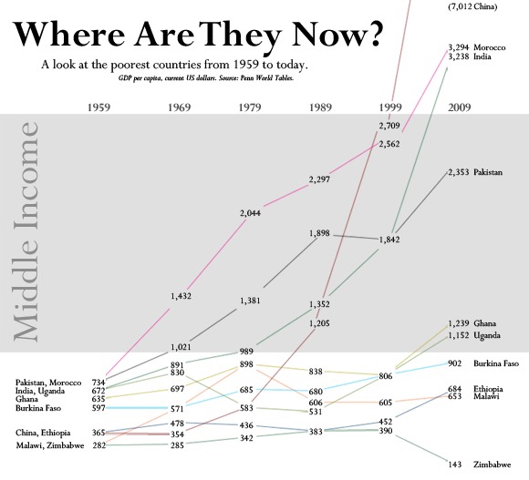http://amoondisaster.wordpress.com/2011/07/15/telling-stories-with-data-the-slopegraph/He also goes in-depth on the process he went through in making the chart, what he liked about it, and where he would like to see it improve. If you have any interested in making slopegraphs, his post is well worth a look. As a preview:
However, what I really like about this style of presentation is that it breaks the story down into discrete sub-narratives by country and decade. As I alluded to yesterday, I am somewhat skeptical of tendency in development economics to focus on large-scale trends — with the implication often being that this will allow us to devise ‘universal’ rules. Too often economists write off the outliers as uninteresting, unimportant, or even harmful to their analysis. But given the rarity of the outcome development economists are searching for — poor country becomes rich country — it seems like the outliers are exactly what they should be focusing on. Looking at this chart, the natural question for the uninitiated would be “What’s the deal with China?” not “Hey, what’s up with Burkina Faso, Ethiopia, and Malawi?”
This chart also helps to generate questions that would not be so obvious in a more granular presentation, especially to those not accustomed to reading charts, as the human brain is pretty good at recognizing and comparing the slopes of straight lines. Looking at the chart for a few minutes quickly reveals the important moments in the economic histories of these diverse countries: what happened in Uganda in the 70s? China in the 80s? Most countries in the 2000s? And what the hell is wrong with Zimbabwe? You can also discern other interesting pieces of data, such as the fact that economic dynamo India actually only surpassed economic basketcase Pakistan in per-capita GDP relatively recently. Some countries have been particularly volatile, like Malawi, while Morocco was a good, steady performer. You really lose surprisingly little meaning compared to the conventional line chart, especially considering the number of distractions which are eliminated.
Whiskerslopes
As I mentioned in the original piece, handling overlapping labels is tricky.
One interesting approach to handling that was proposed by Mike Stone. He added a version of Tufte’s “revised box plot” to each axis, showing the median value, the quartiles on each axis (the lines run from the 75% point to the 90% point (above the median) and the 25% point to the 10% point (below the median)).
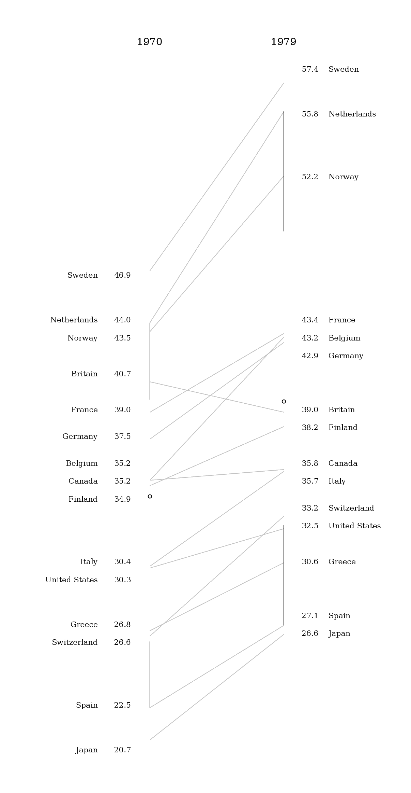Here’s how he described it, in an e-mail to me:
The whisker diagrams have the same general effect as the hairline between rows of numbers in a table. They break the textual data into smaller chunks which are easier for the reader to process. By my estimation, there are fourteen easily resolved buckets for information on either side: top, middle, and bottom for each line, same for the spaces between the lines and the median dot, plus ‘everything above the top line’ and ‘everything below the bottom line’.
Grouping the textual information in those buckets released me from the problem of using the text as a data point per se. I was able to make the graphical information do what it does well – showing the relationships between values – while letting the text do what it does well – telling us the exact values associated with the lines nearby.
Given that slopegraphs are best suited to numerical data, the whisker diagrams do provide meaningful information. Best of all, they give a lot of bang for the buck while maintaining the ‘pure data ink’ character of the original chart.
At first, I was thrown by the added lines, but I think he’s right, that by introducing the vertical lines, it isn’t as necessary for the text labels to line up as closely with the endpoints of the lines.
I think the added vertical lines would need to be added carefully, but they do add to the chart. Mike continues:
[adding the whisker lines highlights] the oddball values. Britain skipped from the top quartile to just below average. Canada, Greece, and the US all dropped roughly half a bracket. Finland went from ‘a bit above average’ to ‘a bit below average’. Everyone else stayed about where they started, with France and Belgium moving from the high and low ends of their bracket toward the middle.
Thing is, that’s not obvious from the slopes of the lines. The lines for Greece and Spain are nearly parallel, but it’s Spain and Switzerland that more or less define the 10-25% bracket.
I’m eager to see how you all take this enhancement and refine it and run with it. Again, it’s not always going to be practical or necessary to add it, but you might find that it enhances your charts, and frees you up from some of the problem of label collisions.
More Best Practices
I wanted to point out three “best practices” that I’d neglected to mention the first time around.
First, if you have multiple comparisons (as in the cancer slopegraph), maintain a consistent scale for the horizontal alignment of your columns. In the cancer scale, that was a 5-year period. In the NATO defense budgets example I linked to above, that was a 3-year period.
If you have data that spans a 10-year gap as your first line of slopes, and then an update to the dataset only covers a five-year gap, you need to be careful how you place your columns. If they’re equidistant from one another, the relative gradients will be misrepresented.
Second, be clear about whether the “comparison point” on the chart is the end of the slope line or the data label itself.
I touched on this a bit with my critiques of the “Tablet Effect” slopegraph above.
Third, determine whether you want to highlight the absolute rate of change or the fractional rate of change.
Earlier, I mentioned Michael MacAskill’s critique of the Times’ “Infant Mortality” chart. A similar point was made in an e-mail to me from Terry Carlton, who noted:
A country’s slope in this graph is larger, the larger the increase in what is being graphed, namely, government receipts as a percentage of GDP. But comparing slopes could be misleading. Suppose that for country A, the increase is from 10% in 1970 to 20% in 1979, whereas for country B the increase is from 40% to 50%. The slope for both countries would be the same even though what is graphed doubles between 1970 and 1979 for country A, but increases by only a fourth (i.e., by 25% of the original 40%) for country B.
Next, consider country C, for which government receipts as a percentage of GDP increase from from 40% in 1970 to 60% in 1979. The slope for C would be twice that for A, yet the fractional increase in what is being graphed is twice as large for A as for C.
I suspect that many users of slopegraphs would be more interested in the fractional increase of what is being graphed rather than in the absolute increase. A slope graph that used a logarithmic vertical scale would have equal slopes for equal fractional changes, and the larger of two slopes would always be associated with the larger fractional change.
It’s a good point. If the comparative rate-of-change is the most salient aspect of the data that you’re highlighting, consider making your slopegraph’s axes reflect the percentage of change. I suspect this would end up having a midpoint on the left-hand axis (0%), with the different slopes fanning out above and below the 0% line to the right hand axis, which would have positive percentage values above the mid-line, and negative values below.
You might have two different slopegraphs: One showing the absolute change, and one showing the relative change. Alternately, include the secondary data point in parentheses, after the right-hand label (so, in the original GDP example, you could label Sweden’s right-hand datapoint “57.4 Sweden (22.4%)”; Britain’s would be “39.0 Britain (-4.2%)”.
New Slopegraph Software
It’s been neat seeing new software implementations developing. I’ll add these to the original post, but I wanted to call them out here, for people looking for the update.
- The team at Juice Analytics has one of the oldest and best implementations of slopegraph rendering available, with software available for free for the Mac and Excel on the PC. A lot of you wrote in to tell me about Juice’s work. Thank you.
- Michael Tofias, in Stata
- Pradeep Gowda, in Processing
- Hamilton Ulmer, in Javascript/d3
- a better fork of my own Javascript implementation, by Erik Solen, in Javascript/d3
Wrapping Up (Again)
So, yeah: I think slopegraphs have a promising future. It’s been exciting to see the activity surrounding them this week, and to be a part of it.
I think the most succinct description I saw came from Nat Torkington at O’Reilly’s Radar, who said “[slopegraphs convey] rank, value, and delta over time.” That’s a pretty high data-to-ink ratio right there. Far better than my blabbering.
As you develop more slopegraphs in the future, I’d encourage you to post them at Edward Tufte’s forum thread on slopegraphs. And, of course, let me know, on Twitter or by e-mail (charlie@pearbudget.com), what you come up with. I’m looking forward to it.